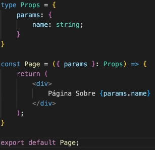
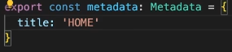
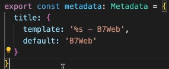
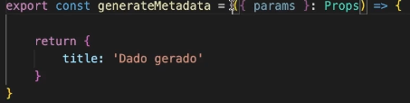

Next JS - A React Framework
Para início de conversa, é necessário saber que para iniciar seus estudos em NextJS é necessário que você domine o ReactJS, afinal, NEXTJS é um framework de React. Caso não se sinta apto, volte a nossa aba de React JS.
Nos dias de hoje por padrão da documentação do react, ele já nos ensina a startar um projeto utilizando algum framework, no nosso caso, o NEXTJS. Então o primeiro passo é startar o projeto com a biblioteca:
Atualizando: sudo npm update -g create-next-app
Comando: npx create-next-app
Criando Rotas
Para criarmos páginas no next, precisamos seguir determinadas regras de 'nomenclaturas'. Para isso é decidido que por padrão, criamos uma pasta com o nome da página que desejamos, e dentro um arquivo page.tsx. Outra coisa que precisamos ter claro em nossa mente quando falamos em NEXT, é a diferença entre Layout e Page. O Layout é basicamente como o próprio nome já diz. Temos um Layout que podemos colocar por exemplo um Menu e um Footer. Logo, todas as pages que criarmos no projeto já irão implementar esse layout, e dentro da page focamos apenas na page.
Também é possível criarmos layouts específicos para uma page, basta criarmos outro arquivo Layout dentro de seu diretório específico.
Existe determinadas convenções para organizarmos nossos Grupos de Rotas . Por exemplo, ao criarmos uma pasta entre parenteses, ex: (auth), ele servirá apenas para agrupar. Supomos que dentro dessa página tenhamos dois arquivos, ex Login e Register. Nós iremos acessar direto /register, e não /auth/register, pois ele serve apenas para agrupar. Também precisamos saber que para excluirmos pastas do mapeamento de rotas, precisamos colocar o prefixo _, por exemplo : _helpers, _components.
Outro fator importante é aprender a trabalhar com Rotas Dinâmicas. Aqui é onde provavelmente mais será utilizado dentro de nossos sistemas. Imagine que temos uma page de usuários users, que os lista. Dentro de seu diretório , podemos criar outra pasta entre chaves ex: [user]. Dessa forma criamos uma rota dinâmica. Qualquer coisa que for colocada depois de users, será aceito. Porém o próximo passo é pegar o qeu o usuário digitou. Por exemplo:
Assim podemos passar um nome, um ID, qualquer coisa via parametro, para que a page que for receber possa trabalhar com essa informação. E assim é criando o sistema de rotas em cascata do Next .
Também pode haver cenários na qual nao sabemos ao certo quantos parametros dinamicos irão ser inseridos.. por exemplo: shop/men/tshirt/sizeM , e por ai vai... Nesses cenários precisamos ter alguma forma de capturar todos os parametros enviados de uma vez. Para recebe-los,
Outro fator importante para trabalharmos com rotas no Next, é configurarmos em cada page que criarmos, os seus dados do Head. Para isso, podemos utilizar a tag a const Meta Ex:. Caso coloquemos dentro do layout Raíz todas as demais páginas terão o mesmo Title. Caso coloquemos em cada page, cada page terá o title desejado.
Outra forma importante, é que dentro do Layout Raíz, podemos definir um template e um valor default. Que significa que caso dentro de alguma page não possua a exemplificação, será posto o valor default.
Ainda dentro do assunto do Head, também podemos colocar um title dinâmico em nossa aplicação. Por exemplo, ao acessar a matéria c/ o título X , podemos colocar esse X como o title de nossa página.
